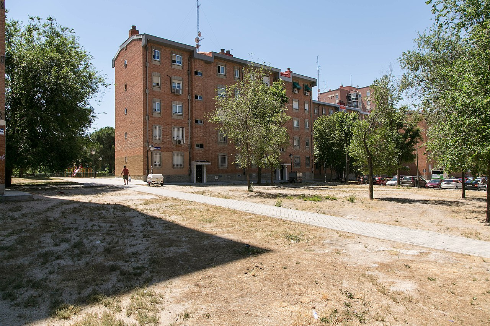

Fontarrón
Fontarrón es un barrio del distrito de Moratalaz, en Madrid. Limita al norte con los barrios de Media Legua y Vinateros, al sur con Numancia y Portazgo (Puente de Vallecas), al oeste con Estrella (Retiro) y al este con Pavones. Está delimitado al sur por la Avenida del Mediterráneo, al este por Fuente Carrantona, al oeste por la Avenida de Paz y al norte por Hacienda de Pavones y la Avenida de Moratalaz.
Cuenta con una población de 17124 habitantes, con una densidad de 178,38 hab/km². Además cuenta con 7 líneas de autobuses que conectan con otras zonas de Madrid y del distrito:
- 8. Legazpi - Valdebernardo
- 20. Sol/Sevilla - Pavones
- 30. Felipe II - Pavones
- 100. Moratalaz - Valderrivas
- 140. Pavones - Canillejas
- 143. Manuel Becerra - Villa de Vallecas
- E4. Felipe II - Valdebernardo